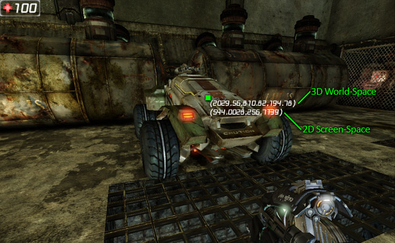
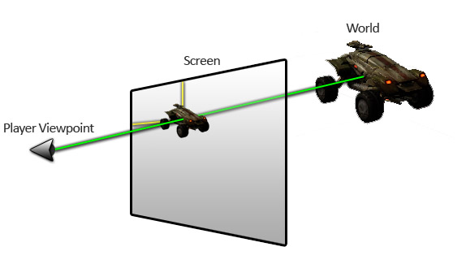
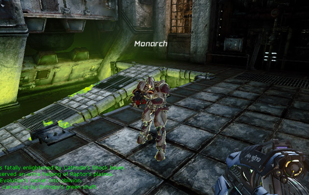
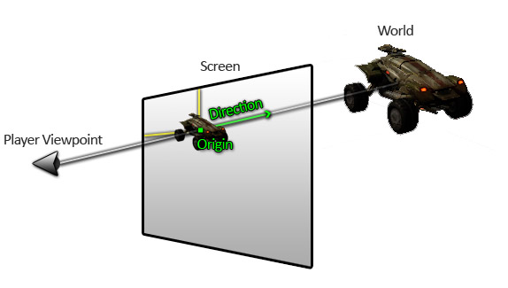
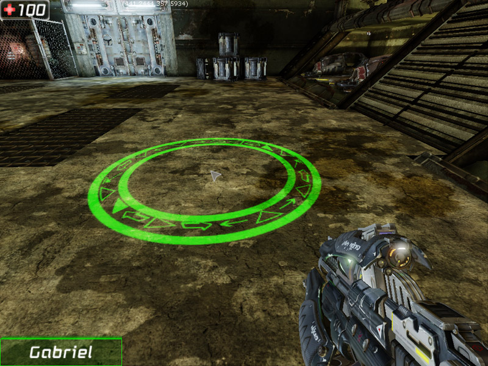

UDN
Search public documentation:
CanvasTechnicalGuide
日本語訳
中国翻译
한국어
Interested in the Unreal Engine?
Visit the Unreal Technology site.
Looking for jobs and company info?
Check out the Epic games site.
Questions about support via UDN?
Contact the UDN Staff
中国翻译
한국어
Interested in the Unreal Engine?
Visit the Unreal Technology site.
Looking for jobs and company info?
Check out the Epic games site.
Questions about support via UDN?
Contact the UDN Staff
UE3 Home > User Interfaces & HUDs > Canvas Technical Guide
Canvas Technical Guide
Overview
Canvas Class
Canvas Properties
Drawing- DrawColor - The color to use for any drawing. Will be used for text
- Font - The Font to use for drawing text.
- DefaultTexture - The texture used by default for drawing texture-based elements with no optional texture parameter specified.
- Org[X/Y] - The horizontal and vertical origin for the current clipping region.
- Clip[X/Y] - The bottom right corner of the current clipping region.
- Cur[X/Y/Z] - The current position to draw to.
- CurYL - The largest vertical size of any element drawn since the last
DrawText()call. - Size[X/Y] - The actual horizontal and vertical dimensions of the viewport the Canvas is drawing to.
- bCenter - If TRUE, text drawn will be centered.
- bNoSmooth - If TRUE, bilinear filtering will be applied to the elements drawn to the Canvas.
Canvas Functions
General- Reset [bKeepOrigin] - Event called by the engine with each update to reset the properties of the Canvas.
- bKeeporigin - If TRUE, the
OrgXandOrgYproperties will not be reset.
- bKeeporigin - If TRUE, the
- SetPos [PosX] [PosY] [PosZ] - Sets the current drawing position of the Canvas.
- Pos[X/Y/Z] - The horizontal and vertical position at which to draw. Z defaults to 1.0 and is usually omitted when calling this function.
- SetOrigin [X] [Y] - Sets the origin for the clipping region of the Canvas.
- [X/Y] - The horizontal and vertical position in pixels.
- SetClip [X] [Y] - Sets the position of the lower-left corner of the clipping region of the Canvas.
- [X/Y] - The horizontal and vertical position in pixels.
- SetDrawColor [R] [G] [B] [A] - Creates a Color using the given values and sets the
DrawColorof the Canvas.- [R/G/B/A] - The red, green, blue, and alpha values.
- SetDrawColorStruct [C] - Sets the
DrawColorof the Canvas using the given Color.- C - The Color to use.
- MakeIcon [Texture] [U] [V] [UL] [VL] - Creates and returns a new CanvasIcon using the given texture.
- Texture - The texture to pull the icon from.
- [U/V] - The horizontal and vertical position of the upper left corner of the portion of the texture to be used. This value is in texels.
- [UL/VL] - The width and height of the portion of the texture to be used. This value is in texels.
- DrawIcon [Icon] [X] [Y] [Scale] - Draws a CanvasIcon at the given position and scale.
- Icon - The CanvasIcon to draw.
- [X/Y] - The horizontal and vertical position in pixels at which to draw the icon on the screen.
- Scale - The scale to apply to the icon.
- DrawRect [RectX] [RectY] [Tex] - Draws a filled rectangle of the given size at the current drawing position using the current
DrawColor.- Rect[X/Y] - The width and height of the rectangle to draw.
- Tex - Optional. The texture to fill the rectangle with. Defaults to the DefaultTexture of the Canvas.
- DrawBox [width] [height] - Draws a 2 pixel wide outlined rectangle of the given size at the current drawing position of the Canvas.
- width - The width of the box to draw.
- height - The height of the box to draw.
- Draw2DLine [X1] [Y1] [X2] [Y2] [LineColor] - Draws a line on the screen.
- [X/Y]1 - The horizontal and vertical position in pixels from which to draw the line.
- [X/Y]2 - The horizontal and vertical position to draw the line to.
- LineColor - The Color to use to draw the line.
- DrawTextureLine [StartPoint] [EndPoint] [Perc] [Width] [LineColor] [LineTexture] [U] [V] [UL] [VL] - Draws a 2D line using a rotated, textured tile.
- StartPoint - The starting point from which to draw the line. This is a Vector with the X and T components containing screen-space pixel coordinates.
- EndPoint - The ending point in to draw the line to. This is a Vector with the X and T components containing screen-space pixel coordinates.
- Perc - The amount of the line to draw. This value is subtracted from the overall distance from the
StartPointto theEndPointto determine the length of the rendered line. The rendered line will always be centered at the midpoint from theStartPointto theEndPoint. - Width - The width in pixels of each line.
- LineColor - The Color to tint the first line.
- Tex - The texture to be used to draw the lines.
- [U/V] - The horizontal and vertical position of the upper left corner of the portion of the texture to be used. This value is in texels.
- [UL/VL] - The width and height of the portion of the texture to be used. This value is in texels.
- DrawTextureDoubleLine [StartPoint] [EndPoint] [Perc] [Spacing] [Width] [LineColor] [AltLineColor] [Tex] [U] [V] [UL] [VL] - Draws two spaced 2D lines using rotated, textured tiles.
- StartPoint - The starting point from which to draw the lines. This is a Vector with the X and T components containing screen-space pixel coordinates.
- EndPoint - The ending point in to draw the lines to. This is a Vector with the X and T components containing screen-space pixel coordinates.
- Perc - The amount of the lines to draw. This value is subtracted from the overall distance from the
StartPointto theEndPointto determine the length of the rendered line. The rendered lines will always be centered at the midpoint from theStartPointto theEndPoint. - Spacing - The number of pixels between the two lines.
- Width - The width in pixels of each line.
- LineColor - The Color to tint the first line.
- AltLineColor - The Color to tint the second line.
- Tex - The texture to be used to draw the lines.
- [U/V] - The horizontal and vertical position of the upper left corner of the portion of the texture to be used. This value is in texels.
- [UL/VL] - The width and height of the portion of the texture to be used. This value is in texels.
- DrawDebugGraph [Title] [ValueX] [ValueY] [UL_X] [UL_Y] [W] [H] [RangeX] [RangeY] - Draws a graph comparing 2 variables. Useful for visual debugging and tweaking.
- Title - The label to draw on the graph, or "" for none.
- Value[X/Y] - Value of the point to plot on the horizontal and vertical axes of the graph.
- UL_[X/Y] - The horizontal and vertical position in pixels for the upper left corner of the graph on the screen.
- [W/H] - The width and height of the graph in pixels.
- Range[X/Y] -The ranges of values shown on the graph for the horizontal and vertical axes.
- CreateFontRenderInfo [bClipText] [bEnableShadow] [GlowColor] [GlowOuterRadius] [GlowInnerRadius] - Creates and returns a new FontRenderInfo with the given properties.
- bClipText - If TRUE, text drawn with this FontRenderInfo should be clipped.
- bEnableShadow - If TRUE, text drawn with this FontRenderInfo should be shadowed.
- GlowColor - The base color to use for glowing text.
- GlowOuterRadius - The Vector2D specifying the outline glow outer radius (0 to 1, 0.5 is edge of character silhouette) glow influence will be 0 at GlowOuterRadius.X and 1 at GlowOuterRadius.Y
- GlowInnerRadius - The Vector2D specifying the outline glow inner radius (0 to 1, 0.5 is edge of character silhouette) glow influence will be 1 at GlowInnerRadius.X and 0 at GlowInnerRadius.Y
- StrLen [String] [XL] [YL] - Calculates the horizontal and vertical size of a given string. This takes text wrapping into account.
- String - The text to get the size of.
- [X/Y]L - Out. Outputs the horizontal and vertical size of the text.
- TextSize [String] [XL] [YL] - Calculates the horizontal and vertical size of a given string. This is used for clipped text as it does not take wrapping into account.
- String - The text to get the size of.
- [X/Y]L - Out. Outputs the horizontal and vertical size of the text.
- DrawText [Text] [CR] [XScale] [YScale] [RenderInfo] - Draws a string of text to the screen.
- Text - The string of text to be drawn.
- CR - Optional. If TRUE, the current drawing position is incremented vertically by the size of the text drawn prior to drawing the text.
- [X/Y]Scale - Optional. The horizontal and vertical scaling to apply to the text.
- RenderInfo - Optional. The
FontRenderInfoto use when drawing the text.
- DrawTile [Tex] [XL] [YL] [U] [V] [UL] [VL] [LColor] [ClipTile] [Blend] - Draws a texture to an axis-aligned quad at the current drawing position (CurX,CurY).
- Tex - The Texture to draw.
- [XL/YL] - The width and height of the tile to be drawn.
- [U/V] - The horizontal and vertical position of the upper left corner of the portion of the texture to be drawn. This value is in texels.
- [UL/VL] - The width and height of the portion of the texture to be drawn. This value is in texels.
- LColor - The color used to tint the tile.
- ClipTile - If TRUE, the tile should be clipped by the clipping region.
- Blend - Optional. The
EBlendModeblending mode to use when drawing the tile.
- PreOptimizeDrawTiles [Num] [Tex] [Blend] - Pre-allocates vertices and triangles for future consecutive DrawTile() calls using the same texture and blending mode.
- Num - The number of times
DrawTile()will be executed following this functional call. If other draws (Text, different textures, etc) are done before this amount ofDrawTile()calls have been executed, the optimization will not work and will only waste memory. - Tex - The texture that will be used in the subsequent calls.
- Blend - The
EBlendModeblending mode that will be used in the subsequent calls.
- Num - The number of times
- DrawMaterialTile [Mat] [XL] [YL] [U] [V] [UL] [VL] [LColor] [ClipTile] [Blend] - Draws a material to an axis-aligned quad at the current drawing position (CurX,CurY).
- Mat - The Material to draw.
- [XL/YL] - The width and height of the tile to be drawn.
- [U/V] - The horizontal and vertical coordinates of the upper left corner of the portion of the material to be drawn. This value is a percentage in the range [0,1].
- [UL/VL] - The width and height of the portion of the texture to be drawn. This value is a percentage in the range [0,1].
- LColor - The color used to tint the tile.
- ClipTile - If TRUE, the tile should be clipped by the clipping region.
- DrawRotatedTile [Tex] [Rotation] [XL] [YL] [U] [V] [UL] [VL] [AnchorX] [AnchorY] - Draws a texture to a rotated quad at the current drawing position (CurX,CurY).
- Tex - The Texture to draw.
- Rotation - The Rotator specifying the rotation of the tile.
- [XL/YL] - The width and height of the tile to be drawn.
- [U/V] - The horizontal and vertical position of the upper left corner of the portion of the texture to be drawn. This value is in texels.
- [UL/VL] - The width and height of the portion of the texture to be drawn. This value is in texels.
- Anchor[X/Y] - The horizontal and vertical position in pixels relative to the top-left corner of the tile to use as the pivot point for the rotation.
- DrawRotatedMaterialTile [Mat] [Rotation] [XL] [YL] [U] [V] [UL] [VL] [AnchorX] [AnchorY] - Draws a material to a rotated quad at the current drawing position (CurX,CurY).
- Mat - The Material to draw.
- Rotation - The Rotator specifying the rotation of the tile.
- [XL/YL] - The width and height of the tile to be drawn.
- [U/V] - The horizontal and vertical coordinates of the upper left corner of the portion of the material to be drawn. This value is a percentage in the range [0,1].
- [UL/VL] - The width and height of the portion of the texture to be drawn. This value is a percentage in the range [0,1].
- Anchor[X/Y] - The horizontal and vertical position in pixels relative to the top-left corner of the tile to use as the pivot point for the rotation.
- DrawTileStretched [Tex] [Rotation] [XL] [YL] [U] [V] [UL] [VL] [LColor] [bStretchHorizontally] [bStretchVertically] - Draws a texture stretched to an axis-aligned quad at the current drawing position (CurX,CurY). The texture will be stretched to fit the tile, preserving the integrity of the texture. This is useful for drawing boxes of any size as the outline portion of the texture is unchanged, while the inner portion is scaled.
- Tex - The Texture to draw.
- [XL/YL] - The width and height of the tile to be drawn.
- [U/V] - The horizontal and vertical position of the upper left corner of the portion of the texture to be drawn. This value is in texels.
- [UL/VL] - The width and height of the portion of the texture to be drawn. This value is in texels.
- LColor - The color used to tint the tile.
- bStretchHorizontally - Optional. If TRUE, the tile is stretched horizontally instead of scaled.
- bStretchVertically - Optional. If TRUE, the tile is stretched vertically instead of scaled.
- DrawTris [Tex] [Triangles] - Draws an array of triangles to the screen.
- Tex - The texture to apply to the triangles.
- Triangles - An array of
CanvasUVTristo draw.
- DrawTexture [Tex] [Scale] - Draws the entirety of the given texture as a tile to the screen at the given scale.
- Tex - The texture to draw.
- Scale - The scale to apply to the tile drawn. The dimensions of the final rendered tile will be:
(Scale * Tex.SizeX x Scale * Tex.SizeY)
- DrawTextureBlended [Tex] [Scale] [Blend] - Draws the entirety of the given texture as a tile to the screen at the given scale using the given blend mode.
- Tex - The texture to draw.
- Scale - The scale to apply to the tile drawn. The dimensions of the final rendered tile will be:
(Scale * Tex.SizeX x Scale * Tex.SizeY) - Blend - The
EBlendModeblending mode to use.
- Project [location] - Transforms a 3D world-space vector into 2D screen coordinates.
- location - The world-space Vector to transform.
- DeProject [ScreenPos] [WorldOrigin] [WorldDirection] - Transforms 2D screen coordinates into a 3D world-space origin and direction. These can then be used in a trace to do ray-picking.
- ScreenPos - The Vector2D representing the screen coordinates in pixels to transform.
- WorldOrigin - Out. Outputs the world-space origin Vector.
- WorldDirection - Out. Outputs the world-space direction Vector.
- PushTranslationMatrix [TranslationVector] - Pushes a translation matrix onto the canvas.
- TranslationVector - Translation Vector to use to create the translation matrix.
- PopTransform - Pops the topmost matrix from the canvas transform stack.
Canvas Drawing
Project and DeProject
- Project - Transforms a 3D world-space vector into 2D screen coordinates.
- DeProject - Transforms 2D screen coordinates into a 3D world-space origin and direction.
Project
TheProject() function takes a Vector in world-space, such as the location of an Actor, and transforms it into 2D screen coordinates.

Imagine your computer screen is a window which you look through into the game world. Then, trace a line from your eye to the Actor in the world on the other side of the "window". The point where that line intersects with the window would be the screen coordinates returned by the Project() function.

By calculating the position of an Actor on the screen, it becomes trivial to overlay graphics or text or a combination of the two that appear be located in the world at the location of the associated Actor. A basic use of this might to display the names of the players in the game floating above their heads.

DeProject
TheDeProject() function takes a set of screen coordinates in the form of a Vector2D and transforms those into origin and direction Vectors, which are the components of a ray.

The origin and direction Vectors can be used to create a start and end Vector to use with the Trace() function to do actions such as mouse picking or to project a reticule in the world at the location the mouse is currently hovering over.

Blending Modes
EBlendMode, contains the following items:
- BLEND_Opaque - Final color = Source color. This blend mode is compatible with lighting.
- BLEND_Masked - Final color = Source color if OpacityMask < OpacityMaskClipValue, otherwise the pixel is discarded. This blend mode is compatible with lighting.
- BLEND_Translucent - Final color = Source color * Opacity + Dest color * (1 - Opacity). This blend mode is NOT compatible with dynamic lighting.
- BLEND_Additive - Final color = Source color + Dest color. This blend mode is NOT compatible with dynamic lighting.
- BLEND_Modulate - Final color = Source color * Dest color. This blend mode is NOT compatible with dynamic lighting, or fog, unless this is a decal material.
- BLEND_SoftMasked - Similar to BLEND_Masked, but the borders between opaque and transparent are blurred. There are some limitations to using this mode. For more information, see the SoftMasked page.
- BLEND_AlphaComposite - Used for materials with textures that have premultiplied alpha. That is, the color channel has already been multiplied by the alpha so when blending with the frame buffer, the GPU can skip the (SrcAlpha * SrcColor) arithmetic that is typically used with alpha blending. The blend mode was added as part of the Scaleform GFx integration which often uses this type of blending for UI textures.
Canvas Icons
DrawIcon() function. This function does a simple DrawTile() call using the Canvas Icon's properties. Should you need specialized functionality, such as drawing Canvas Icons stretched, custom drawing functions would need to be created in your HUD class to handle these.
An example might be:
/**
* Draw a CanvasIcon stretched at the desired canvas position.
*/
final function DrawIconStretched(CanvasIcon Icon, float X, float Y, optional float ScaleX, optional float ScaleY)
{
if (Icon.Texture != None)
{
// verify properties are valid
if (ScaleX <= 0.f)
{
ScaleX = 1.f;
}
if (ScaleY <= 0.f)
{
ScaleY = 1.f;
}
if (Icon.UL == 0.f)
{
Icon.UL = Icon.Texture.GetSurfaceWidth();
}
if (Icon.VL == 0.f)
{
Icon.VL = Icon.Texture.GetSurfaceHeight();
}
// set the canvas position
Canvas.SetPos(X, Y);
// and draw the texture
Canvas.DrawTileStretched(Icon.Texture, Abs(Icon.UL) * ScaleX, Abs(Icon.VL) * ScaleY,
Icon.U, Icon.V, Icon.UL, Icon.VL,, true, true);
}
}
Canvas HUD Example
class UDNHUD extends MobileHUD;
var Texture2D DefaultTexture;
var Font PlayerFont;
var float PlayerNameScale;
var CanvasIcon HealthIcon;
var CanvasIcon HealthBackgroundIcon;
function DrawHUD()
{
local Vector2D TextSize;
super.DrawHUD();
//Draw Player health
Canvas.DrawIcon(HealthIcon, 8, 8, 0.5);
Canvas.Font = PlayerFont;
Canvas.SetDrawColorStruct(WhiteColor);
DrawIconStretched(HealthBackgroundIcon, 0, 0, 2.167, 0.875);
Canvas.TextSize(PlayerOwner.Pawn.Health, TextSize.X, TextSize.Y);
Canvas.SetPos(96 - (TextSize.X * PlayerNameScale / RatioX),0);
Canvas.DrawText(PlayerOwner.Pawn.Health,,PlayerNameScale / RatioX,PlayerNameScale / RatioY);
//Draw Player Name
Canvas.SetPos(0, SizeY - 64);
Canvas.DrawTileStretched(DefaultTexture,256, 64, 8, 72, 112, 48, ColorToLinearColor(GreenColor), true, true, 1.0);
Canvas.TextSize(UTPlayerController(PlayerOwner).PlayerReplicationInfo.PlayerName, TextSize.X, TextSize.Y);
Canvas.SetPos(128 - ((TextSize.X * PlayerNameScale / RatioX) / 2), SizeY - 28 - ((TextSize.Y * PlayerNameScale / RatioY) / 2));
Canvas.DrawText(UTPlayerController(PlayerOwner).PlayerReplicationInfo.PlayerName,,PlayerNameScale / RatioX,PlayerNameScale / RatioY);
}
/**
* Draw a CanvasIcon stretched at the desired canvas position.
*/
final function DrawIconStretched(CanvasIcon Icon, float X, float Y, optional float ScaleX, optional float ScaleY)
{
if (Icon.Texture != None)
{
// verify properties are valid
if (ScaleX <= 0.f)
{
ScaleX = 1.f;
}
if (ScaleY <= 0.f)
{
ScaleY = 1.f;
}
if (Icon.UL == 0.f)
{
Icon.UL = Icon.Texture.GetSurfaceWidth();
}
if (Icon.VL == 0.f)
{
Icon.VL = Icon.Texture.GetSurfaceHeight();
}
// set the canvas position
Canvas.SetPos(X, Y);
// and draw the texture
Canvas.DrawTileStretched(Icon.Texture, Abs(Icon.UL) * ScaleX, Abs(Icon.VL) * ScaleY,
Icon.U, Icon.V, Icon.UL, Icon.VL,, true, true);
}
}
defaultproperties
{
DefaultTexture=Texture2D'UDNHUDContent.UDN_HUDGraphics'
PlayerFont="UI_Fonts.MultiFonts.MF_HudLarge"
PlayerNameScale=0.25
HealthIcon=(Texture=Texture2D'UDNHUDContent.UDN_HUDGraphics',U=72,V=8,UL=48,VL=48)
HealthBackgroundIcon=(Texture=Texture2D'UDNHUDContent.UDN_HUDGraphics',U=8,V=8,UL=48,VL=48)
}
class UDNGame extends UTGame;
defaultproperties
{
bUseClassicHUD=true
HUDType=class'UDNExamples.UDNHUD'
}